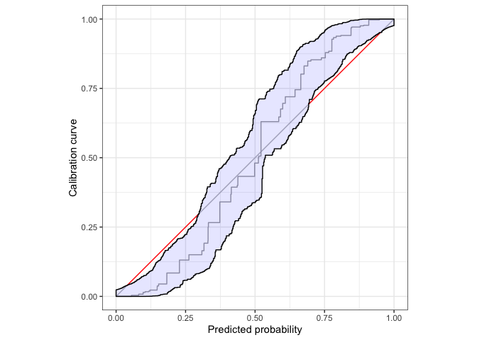
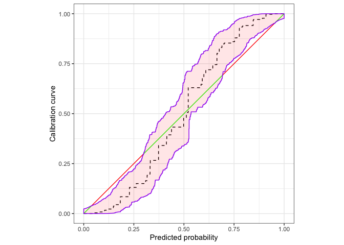

An R package to assess calibration of binary outcome predictions. Authored by Timo Dimitriadis (Heidelberg University), Alexander Henzi (University of Bern), and Marius Puke (University of Hohenheim).
Installation
calibrationband is available on The Comprehensive R Archive Network (CRAN).
install.packages("calibrationband")Example
library(calibrationband)
library(dplyr)
set.seed(123)
s=.8
n=10000
x <- runif(n)
p <- function(x,s){p = 1/(1+((1/x*(1-x))^(s+1)));return(p)}
dat <- tibble::tibble(pr=x, s=s, cep = p(pr,s), y=rbinom(n,1,cep))%>% dplyr::arrange(pr)
cb <- calibration_bands(x=dat$pr, y=dat$y,alpha=0.05, method = "round", digits = 3)
print(cb) # prints autoplot and summary, see also autoplot(.) and summary(.)
#>
#> Areas of misscalibration (ordered by length). In addition there are 2 more.
#> # A tibble: 5 × 2
#> min_x max_x
#> <dbl> <dbl>
#> 1 0.0396 0.299
#> 2 0.693 0.951
#> 3 0.0389 0.0393
#> # … with 2 more rowsUse ggplot2:autolayer to customize the plot.
autoplot(cb,approx.equi=500, cut.bands = F,p_isoreg = NA,p_ribbon = NA,p_diag = NA)+
ggplot2::autolayer(
cb,
cut.bands = F,
p_diag = list(low = "green", high = "red", guide = "none", limits=c(0,1)),
p_isoreg = list(linetype = "dashed"),
p_ribbon = list(alpha = .1, fill = "red", colour = "purple")
)